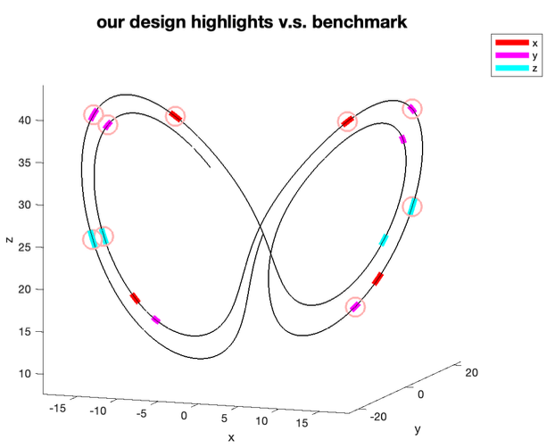
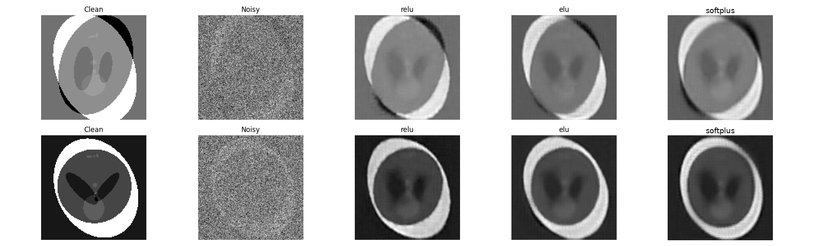

My research develops mathematical foundations and
computational methods for
data-driven scientific discovery, toward streamlined computation and reliable learning.
Interests include randomized numerical linear algebra, computational inverse problems, experimental design, optimization theory, and scientific machine learning.
For an overview of data selection philosophies for learning physical systems, check out our review.
Theme I. Data selection for reliable learning
How can we acquire valuable data and extract information with limited budget?
Continuous experimental design
We formulate optimal experimental design as optimization over the space of probability measures on a continuous design space. Using Wasserstein gradient flows and particle simulations, we identify how experimental importance is distributed across design space. This framework is further extended to adaptive design for nonlinear inference models.



Probabilistic and generative reconstruction: mathematical guarantees
We investigate the reconstruction power and develop rigorous criteria for reliable learning from limited or noisy observations. Our work establishes uniqueness guarantees through randomized subsampling of Hessian objects and studies the stability of denoising performance using generative network surrogates.


Theme II. Structure-aware randomized dimension reduction
How to exploit mathematical structure to efficiently represent and process high-dimensional data?
Tensor-structured sketching
We design random sketching methods tailored to data with tensor-product structure, substantially reducing computational and storage costs without forming the full high-dimensional data.

Scalable tensor compression
We develop streaming and implicit manifold-optimization algorithms for symmetric Tucker decomposition, enabling efficient extraction of low-rank representations from higher-order statistics.

Randomized algorithms for minimax optimization (ongoing)
We develop player-wise sketch-and-project methods for quadratic minimax problems, updating the individual stationarity conditions of competing players. This connects randomized numerical linear algebra with stochastic minimax optimization.
For a complete list of papers, see my publications or Google Scholar .